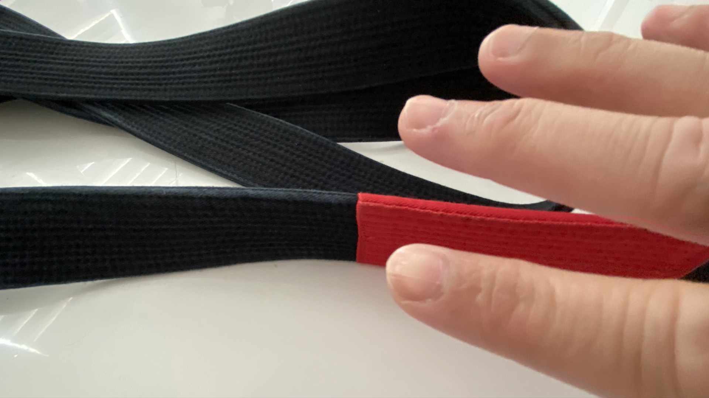
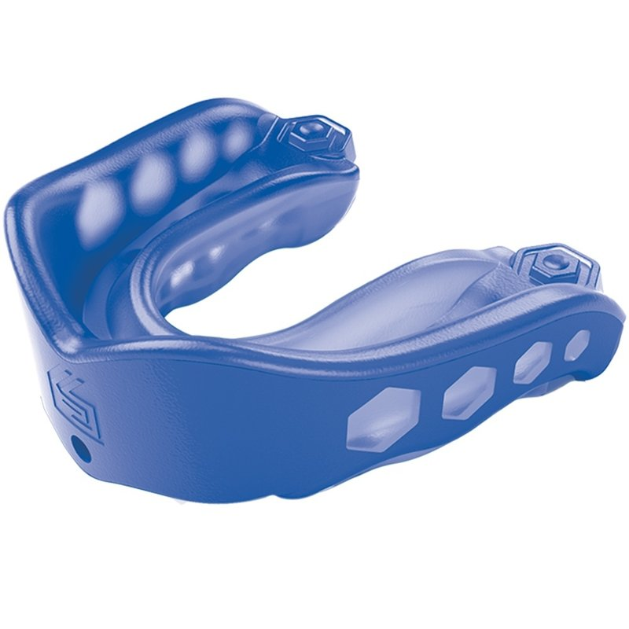
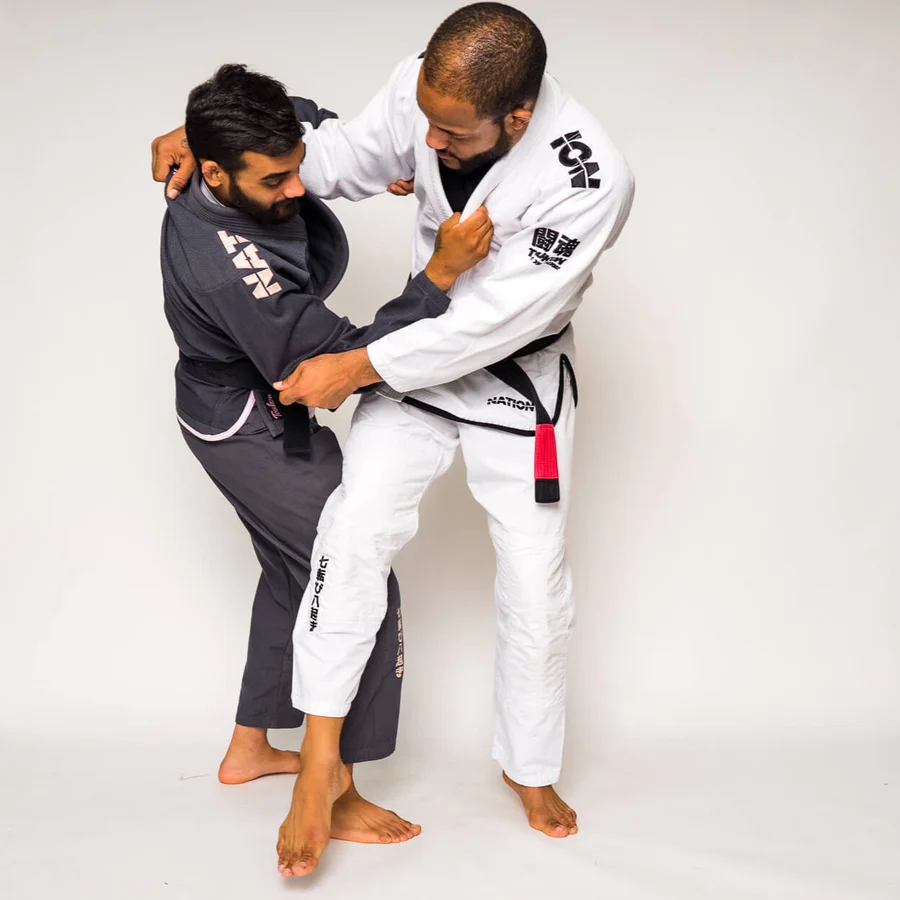

tips for you just started bjj
Things You’ll Need Before Your First Brazillian Jiu Jistu Class
You’re not alone. We all had the same emotions while heading to our first BJJ class. Fortunately, BJJ dojos are some of the most accepting places on the planet. The other students at the gym have once been in your shoes, so you don’t have to worry about anyone giving you a hard time. Most of your training partners and instructors will go out of their way to make you feel as comfortable as possible during classes. Preparing for classes can make your transition into a BJJ player much smoother. Some of the essential things you should pick up before heading into your first BJJ class include:
Short trimmed
A basic rule of thumb to follow in jiu-jitsu is that you shouldn’t be able to see your fingernails at all if you’re looking at your palm, but even that can be a bit too long, depending on your nail and finger shape. Try to keep both your finger and toenails trimmed as low as you can without feeling pain or discomfort. Obviously, cutting your nails too short can put you at risk for bleeding and infection, so use your best judgment and maintain a length that will keep your digits happy without making you a scratch risk.
Mouth Guard
Don’t worry, no one will roundhouse your face during BJJ class, but you still need a mouth guard. BJJ is a high-contact sport, so collisions do occur occasionally. A mouth guard keeps your teeth intact when such rare collisions occur. It’s the main protective gear you need when training. There’s no need to get one of the expensive mouthguards used by boxers. The cheap mouth guards sold at supermarkets are good enough for BJJ.
Clean Your Kimono
Maintaining your gi begins as soon as you are done rolling. It’s critical that you wash your gi after your class as soon as possible. The longer bacteria, sweat, and blood stay on the fabric, the more they eat away at the material, thus reducing its longevity. Of course, washing a stain as quickly it happens will help prevent it from becoming a permanent patch. Also, not cleaning your gi right away will cause it to stink and smell. You should always wash your gi after every practice, even if you did “light” rolling or did not break a sweat. When you get home, you should take your gi and belt out of your bag and put it in the washer.
